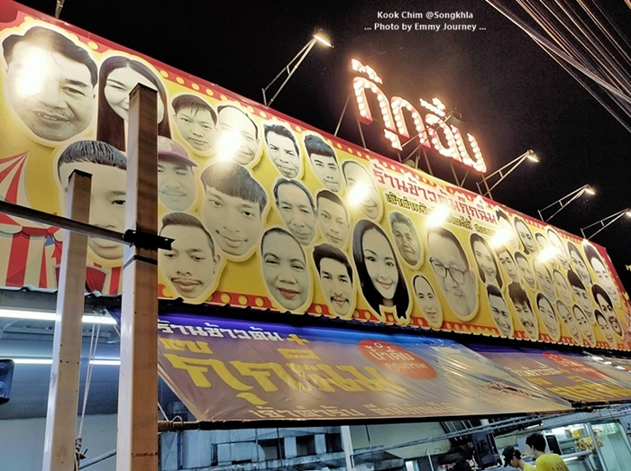
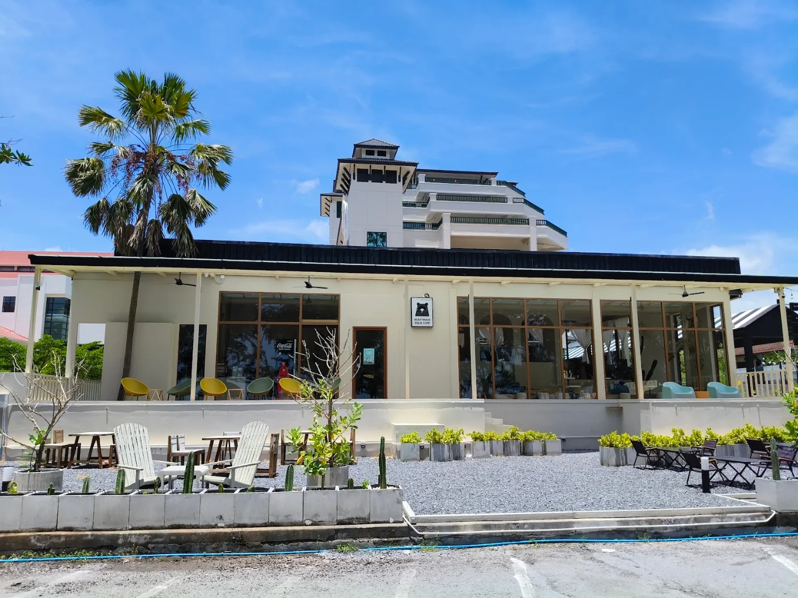
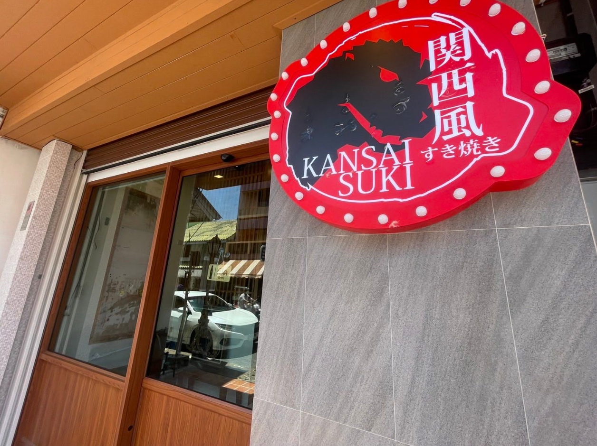

✨ ร้านเด็ดแนะนำในสัปดาห์นี้

ข้าวต้มกุ๊กฉิม
ร้านข้าวต้มยามค่ำคืน ที่มีอาหารหลากหลายมาก ไทย จีน ใต้ ครบรสจัดจ้าน ทำไว เสริฟ์ไว
อ่านเพิ่มเติม
Heartmade Solis Cafe
คาเฟ่สไตล์โฮมมี่สีครีมละมุน อบอวลไปด้วยกลิ่นเบเกอรี่อบใหม่ทุกเช้า
อ่านเพิ่มเติม
Kansai Suki คันไซสุกี้
สุกี้สไตล์ญี่ปุ่นแบบฉบับคันไซ น้ำซุปดำสูตรเข้มข้น และเนื้อหมูสไลด์พรีเมียม
อ่านเพิ่มเติม